[1]:
from model import taxiway_model, create_fault_scen_metrics
from fmdtools.sim import propagate as prop
import networkx as nx
from common import plot_tstep, plot_course
[2]:
import pandas as pd
Taxiway Model Overview
The taxiway model has three main agents: - Helicopter, which lands and takes off from a helipad - Aircraft, which lands at a runway, taxis to a gate, and takes off from a runway (and may be UAVs or Piloted Aircraft) - ATC, which coordinates operations
These agents interact via the flows: - Ground, a MultiFlow tracking the map as well as agent assignments/allocations - Location, a MultiFlow tracking the position/velocity of each route on the map, and - Requests, a CommsFlow tracking the messages sent between the ATC and the Aircraft/Helicopters
[3]:
from fmdtools.analyze.graph import FunctionArchitectureTypeGraph
[4]:
mdl = taxiway_model()
[5]:
tg = FunctionArchitectureTypeGraph(mdl)
[6]:
tg.set_edge_labels(title='')
[7]:
fig, ax = tg.draw(figsize=(7,5), withlegend=True, legend_bbox=(0, .2))
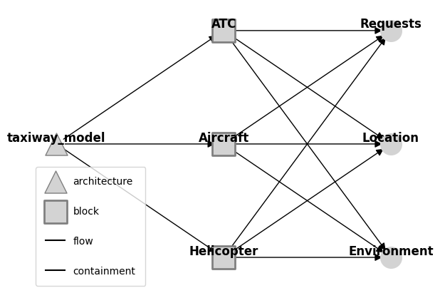
[8]:
fig.savefig("modelstructure.eps", format="eps", bbox_inches = 'tight', pad_inches = 0)
The PostScript backend does not support transparency; partially transparent artists will be rendered opaque.
[9]:
mdl.flows['location']
[9]:
location Location flow: LocationState(x=30.0, y=25.0, xd=0.0, yd=0.0, speed=0.0, stage='flight', mode='standby')
ma1 Location flow: LocationState(x=10.0, y=20.0, xd=0.0, yd=0.0, speed=0.0, stage='takeoff', mode='standby')
percieved Location flow: LocationState(x=10.0, y=20.0, xd=0.0, yd=0.0, speed=0.0, stage='takeoff', mode='standby')
closest Location flow: LocationState(x=10.0, y=20.0, xd=0.0, yd=0.0, speed=0.0, stage='takeoff', mode='standby')
ma2 Location flow: LocationState(x=30.0, y=25.0, xd=0.0, yd=0.0, speed=0.0, stage='flight', mode='standby')
percieved Location flow: LocationState(x=30.0, y=25.0, xd=0.0, yd=0.0, speed=0.0, stage='flight', mode='standby')
closest Location flow: LocationState(x=10.0, y=20.0, xd=0.0, yd=0.0, speed=0.0, stage='takeoff', mode='standby')
ma3 Location flow: LocationState(x=30.0, y=25.0, xd=0.0, yd=0.0, speed=0.0, stage='flight', mode='standby')
percieved Location flow: LocationState(x=30.0, y=25.0, xd=0.0, yd=0.0, speed=0.0, stage='flight', mode='standby')
closest Location flow: LocationState(x=30.0, y=25.0, xd=0.0, yd=0.0, speed=0.0, stage='flight', mode='standby')
ua1 Location flow: LocationState(x=45.0, y=-5.0, xd=0.0, yd=0.0, speed=0.0, stage='park', mode='standby')
percieved Location flow: LocationState(x=45.0, y=-5.0, xd=0.0, yd=0.0, speed=0.0, stage='park', mode='standby')
closest Location flow: LocationState(x=30.0, y=25.0, xd=0.0, yd=0.0, speed=0.0, stage='flight', mode='standby')
ua2 Location flow: LocationState(x=30.0, y=25.0, xd=0.0, yd=0.0, speed=0.0, stage='flight', mode='standby')
percieved Location flow: LocationState(x=30.0, y=25.0, xd=0.0, yd=0.0, speed=0.0, stage='flight', mode='standby')
closest Location flow: LocationState(x=30.0, y=25.0, xd=0.0, yd=0.0, speed=0.0, stage='flight', mode='standby')
ua3 Location flow: LocationState(x=30.0, y=25.0, xd=0.0, yd=0.0, speed=0.0, stage='flight', mode='standby')
percieved Location flow: LocationState(x=30.0, y=25.0, xd=0.0, yd=0.0, speed=0.0, stage='flight', mode='standby')
closest Location flow: LocationState(x=30.0, y=25.0, xd=0.0, yd=0.0, speed=0.0, stage='flight', mode='standby')
h1 Location flow: LocationState(x=65.0, y=15.0, xd=0.0, yd=0.0, speed=0.0, stage='land', mode='standby')
percieved Location flow: LocationState(x=65.0, y=15.0, xd=0.0, yd=0.0, speed=0.0, stage='land', mode='standby')
closest Location flow: LocationState(x=45.0, y=-5.0, xd=0.0, yd=0.0, speed=0.0, stage='park', mode='standby')
h2 Location flow: LocationState(x=30.0, y=25.0, xd=0.0, yd=0.0, speed=0.0, stage='flight', mode='standby')
percieved Location flow: LocationState(x=30.0, y=25.0, xd=0.0, yd=0.0, speed=0.0, stage='flight', mode='standby')
closest Location flow: LocationState(x=30.0, y=25.0, xd=0.0, yd=0.0, speed=0.0, stage='flight', mode='standby')
[10]:
mdl.flows['requests']
[10]:
requests Requests flow: RequestState(atc_com='None', asset_req='None', route=' ')
atc: atc Requests flow: RequestState(atc_com='None', asset_req='land', route=' ')
out: atc_out Requests flow: RequestState(atc_com='None', asset_req='None', route=' ')
in: {'ma1': ('asset_req',), 'ma2': ('asset_req',), 'ma3': ('asset_req',), 'ua1': ('asset_req',), 'ua2': ('asset_req',), 'ua3': ('asset_req',), 'h1': ('asset_req',), 'h2': ('asset_req',)}
received: {}
h1: h1 Requests flow: RequestState(atc_com='None', asset_req='taxi', route=' ')
h2: h2 Requests flow: RequestState(atc_com='None', asset_req='land', route=' ')
ua1: ua1 Requests flow: RequestState(atc_com='None', asset_req='taxi', route=' ')
ua2: ua2 Requests flow: RequestState(atc_com='None', asset_req='land', route=' ')
ua3: ua3 Requests flow: RequestState(atc_com='None', asset_req='land', route=' ')
ma1: ma1 Requests flow: RequestState(atc_com='None', asset_req='takeoff', route=' ')
ma2: ma2 Requests flow: RequestState(atc_com='None', asset_req='land', route=' ')
ma3: ma3 Requests flow: RequestState(atc_com='None', asset_req='land', route=' ')
ma1: ma1 Requests flow: RequestState(atc_com='None', asset_req='takeoff', route=' ')
out: ma1_out Requests flow: RequestState(atc_com='None', asset_req='takeoff', route=' ')
in: {}
received: {}
ma2: ma2 Requests flow: RequestState(atc_com='None', asset_req='land', route=' ')
out: ma2_out Requests flow: RequestState(atc_com='None', asset_req='land', route=' ')
in: {}
received: {}
ma3: ma3 Requests flow: RequestState(atc_com='None', asset_req='land', route=' ')
out: ma3_out Requests flow: RequestState(atc_com='None', asset_req='land', route=' ')
in: {}
received: {}
ua1: ua1 Requests flow: RequestState(atc_com='None', asset_req='taxi', route=' ')
out: ua1_out Requests flow: RequestState(atc_com='None', asset_req='taxi', route=' ')
in: {}
received: {}
ua2: ua2 Requests flow: RequestState(atc_com='None', asset_req='land', route=' ')
out: ua2_out Requests flow: RequestState(atc_com='None', asset_req='land', route=' ')
in: {}
received: {}
ua3: ua3 Requests flow: RequestState(atc_com='None', asset_req='land', route=' ')
out: ua3_out Requests flow: RequestState(atc_com='None', asset_req='land', route=' ')
in: {}
received: {}
h1: h1 Requests flow: RequestState(atc_com='None', asset_req='taxi', route=' ')
out: h1_out Requests flow: RequestState(atc_com='None', asset_req='taxi', route=' ')
in: {}
received: {}
h2: h2 Requests flow: RequestState(atc_com='None', asset_req='land', route=' ')
out: h2_out Requests flow: RequestState(atc_com='None', asset_req='land', route=' ')
in: {}
received: {}
[11]:
mdl.flows['ground']
[11]:
ground Environment flow: TaxiwayStates(area_allocation={'takeoff1': {'ma1'}, 'landing1': set(), 'helipad1': {'h1'}, 'gate1': set(), 'gate2': set(), 'gate3': set(), 'gate4': set(), 'gate5': set(), 'gate6': {'ua1'}, 'air_loc': set()}, asset_area={'h1': 'helipad1', 'h2': 'air_loc', 'ua1': 'gate6', 'ua2': 'air_loc', 'ua3': 'air_loc', 'ma1': 'takeoff1', 'ma2': 'air_loc', 'ma3': 'air_loc'}, asset_assignment={'h1': 'helipad1', 'h2': 'air_loc', 'ua1': 'gate6', 'ua2': 'air_loc', 'ua3': 'air_loc', 'ma1': 'takeoff1', 'ma2': 'air_loc', 'ma3': 'air_loc'})
atc Environment flow: TaxiwayStates(area_allocation={'takeoff1': {'ma1'}, 'landing1': set(), 'helipad1': {'h1'}, 'gate1': set(), 'gate2': set(), 'gate3': set(), 'gate4': set(), 'gate5': set(), 'gate6': {'ua1'}, 'air_loc': set()}, asset_area={'h1': 'helipad1', 'h2': 'air_loc', 'ua1': 'gate6', 'ua2': 'air_loc', 'ua3': 'air_loc', 'ma1': 'takeoff1', 'ma2': 'air_loc', 'ma3': 'air_loc'}, asset_assignment={'h1': 'helipad1', 'h2': 'air_loc', 'ua1': 'gate6', 'ua2': 'air_loc', 'ua3': 'air_loc', 'ma1': 'takeoff1', 'ma2': 'air_loc', 'ma3': 'air_loc'})
Model Simulation
[12]:
fig, ax = mdl.flows['ground'].show_map()
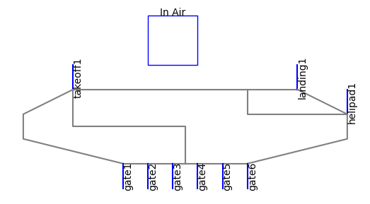
[13]:
endresults, mdlhist = prop.nominal(mdl)
[14]:
fig, ax=plot_tstep(mdl, mdlhist, 16, show_area_allocation=False, locattr="stage", title="Taxiway Activity ")
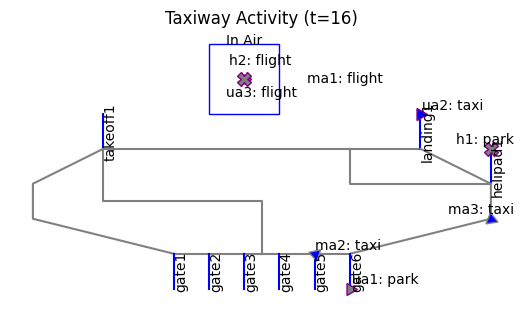
[15]:
fig.savefig("modelactivity.eps", format="eps", bbox_inches = 'tight', pad_inches = 0)
[16]:
fig, ax = plot_course(mdl, mdlhist, "ma2", title="One aircraft's route over time")

[17]:
fig.savefig("assetroute.eps", format="eps", bbox_inches = 'tight', pad_inches = 0)
[18]:
from fmdtools.analyze import phases
phasemaps = phases.from_hist(mdlhist)
phases_to_plot ={"ma2": phasemaps["ma2"], 'h2': phasemaps['h2']}
fig = phases.phaseplot(phases_to_plot, figsize=(4,4), title_padding=-0.02, title="Asset Operational Phases", phase_ticks="both")
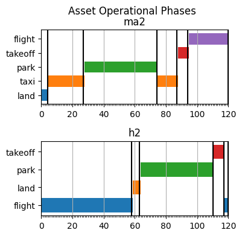
[19]:
fig.savefig("assetmodes.eps", format="eps", bbox_inches = 'tight', pad_inches = 0)
Fault Simulation and Analysis
Perception Fault - AC Vision Fault
[20]:
endresults, mdlhist = prop.one_fault(mdl, "ma3", "lost_sight",
desired_result={93: {"graph.flows.location":{'include_glob':False}},
110:{"graph.flows.location":{'include_glob':False}},
20:["graph"], 120:['graph', "endclass"]})
[21]:
fig, ax = plot_tstep(mdl, mdlhist.faulty, 93, locattr="stage", assets_to_label=["ma3", "ma2"], areas_to_label=[],
title="MA3 approaches MA2 with no vision cone ", show_area_allocation=False)
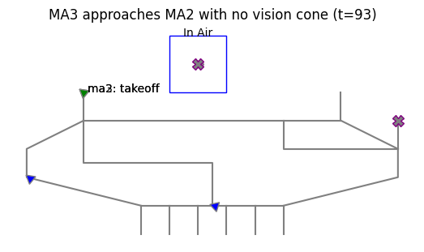
[22]:
fig.savefig("ac_vision_map.eps", format="eps", bbox_inches = 'tight', pad_inches = 0)
[23]:
endresults.t120p0.endclass #table should also include local, global metrics
[23]:
num_cycled: 4
perc_cycled: 0.5
num_crashed: 2
[24]:
endresults.t93p0.graph.flows.location
endresults.t93p0.graph.flows.location.set_edge_labels(title="")
[25]:
#%matplotlib qt
#endresults.t93p0.graph.flows.location.move_nodes()
[26]:
%matplotlib inline
[27]:
pos = {'ma1': [-0.51, -0.08], 'ma1_percieved': [-0.88, 0.03],
'ma1_closest': [-0.3, 0.12], 'ma2': [-0.66, 0.59],
'ma2_percieved': [-0.81, 0.84], 'ma2_closest': [-0.67, 0.26],
'ma3': [0.77, 0.49], 'ma3_percieved': [0.81, 0.83],
'ma3_closest': [0.51, 0.28], 'ua1': [0.0, 0.62],
'ua1_percieved': [0.0, 0.91], 'ua1_closest': [-0.02, 0.34],
'ua2': [0.02, -0.64], 'ua2_percieved': [0.0, -0.88],
'ua2_closest': [0.04, -0.38], 'ua3': [0.66, -0.48],
'ua3_percieved': [0.8, -0.84], 'ua3_closest': [0.42, -0.23],
'h1': [0.64, 0.11], 'h1_percieved': [0.93, -0.15],
'h1_closest': [0.3, 0.07], 'h2': [-0.69, -0.52],
'h2_percieved': [-0.79, -0.85], 'h2_closest': [-0.45, -0.32]}
endresults.t93p0.graph.flows.location.set_pos(**pos)
[28]:
fig, ax = endresults.t93p0.graph.flows.location.draw(figsize=(8,8), title="t=93", legend_bbox=(0.84,0.27))
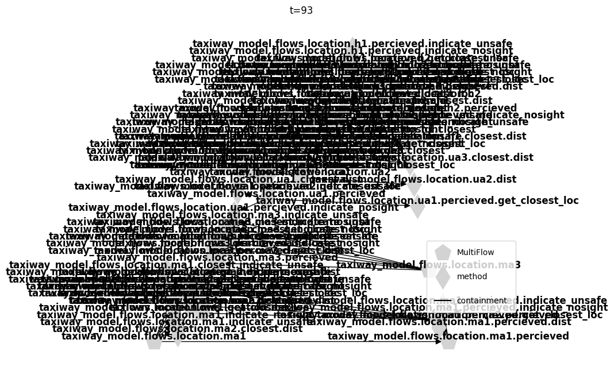
[29]:
fig.savefig("ac_loc_93.eps", format="eps", bbox_inches = 'tight', pad_inches = 0)
The PostScript backend does not support transparency; partially transparent artists will be rendered opaque.
[30]:
#%matplotlib qt
#endresults.t120p0.graph.move_nodes()
[31]:
%matplotlib inline
[32]:
pos = {'atc': [-1.0, -0.15], 'ma1': [-0.86, 0.52], 'ma2': [-0.33, 0.95],
'ma3': [0.62, -0.78], 'ua1': [-0.66, -0.76], 'ua2': [0.36, 0.94],
'ua3': [-0.02, -1.0], 'h1': [0.89, 0.48], 'h2': [1.0, -0.2],
'ground': [0.31, -0.26], 'location': [-0.31, -0.24], 'requests': [-0.01, 0.43]}
endresults.t120p0.graph.set_pos(**pos)
[33]:
endresults.t120p0.graph.set_edge_labels(title="")
endresults.t120p0.graph.set_node_styles(label=dict(FxnBlock=dict(node_size=2000),
MultiFlow=dict(node_size=2000),
CommsFlow=dict(node_size=2000)),
degraded={}, faulty={})
[34]:
fig, ax = endresults.t120p0.graph.draw(figsize=(5,5), withlegend=False)
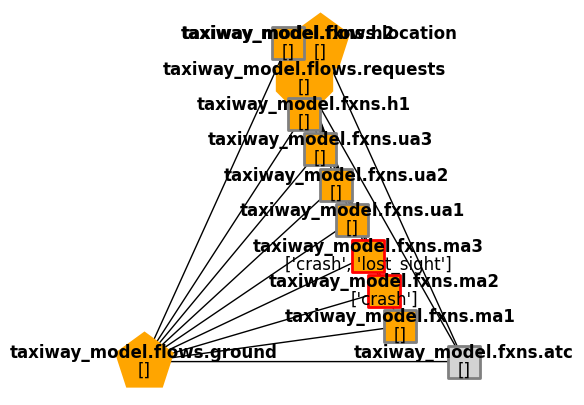
[35]:
fig.savefig("ac_faultprop_120.eps", format="eps", bbox_inches = 'tight', pad_inches = 0)
[36]:
ind_hist = create_fault_scen_metrics(mdlhist)
[37]:
fig, ax = ind_hist.plot_line("degraded_fields",
"cycled_assets",
"unsafe_distances",
"assets_without_sight",
"faulty_functions",
time_slice=[0,93],
time_slice_label = "fault injection/occurence",
ylabels={'off-nominal fields':'%'})
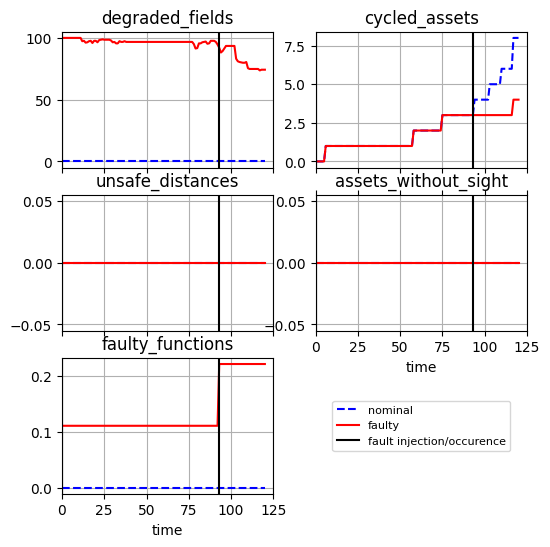
[38]:
fig.savefig("fault_history_ac_vision.eps", format="eps", bbox_inches = 'tight', pad_inches = 0)
The PostScript backend does not support transparency; partially transparent artists will be rendered opaque.
[39]:
final_values = ind_hist.faulty.get_slice(-1)
final_values
[39]:
{'incorrect_fields': 0,
'assets_without_sight': 0,
'unsafe_distances': 0,
'overbooked_locations': 0,
'incorrect_perception': 0,
'duplicate_land_commands': 0,
'cycled_assets': 4,
'degraded_fields': 74.2603550295858,
'faulty_functions': 0.2222222222222222,
'time': 120.0}
[40]:
final_res = pd.DataFrame.from_dict({k: [v] for k, v in final_values.items()}, orient='index')
final_res
[40]:
| 0 | |
|---|---|
| incorrect_fields | 0.000000 |
| assets_without_sight | 0.000000 |
| unsafe_distances | 0.000000 |
| overbooked_locations | 0.000000 |
| incorrect_perception | 0.000000 |
| duplicate_land_commands | 0.000000 |
| cycled_assets | 4.000000 |
| degraded_fields | 74.260355 |
| faulty_functions | 0.222222 |
| time | 120.000000 |
[41]:
print(final_res.to_latex())
\begin{tabular}{lr}
\toprule
& 0 \\
\midrule
incorrect_fields & 0.000000 \\
assets_without_sight & 0.000000 \\
unsafe_distances & 0.000000 \\
overbooked_locations & 0.000000 \\
incorrect_perception & 0.000000 \\
duplicate_land_commands & 0.000000 \\
cycled_assets & 4.000000 \\
degraded_fields & 74.260355 \\
faulty_functions & 0.222222 \\
time & 120.000000 \\
\bottomrule
\end{tabular}
Communications Fault - Poor land command by ATC
[42]:
from fmdtools.analyze.graph import MultiFlowGraph, CommsFlowGraph
ground_args = {'include_glob':True, "include_states":True,
'send_connections':{"asset_area":"asset_area",
"area_allocation":"area_allocation",
"asset_assignment":"asset_assignment"}}
req_args = {'include_glob':False, "ports_only":True}
endresults, mdlhist = prop.sequence(mdl, faultseq={8:{"atc":["wrong_land_command"]},10:{"ua2":["lost_sight"]}},
desired_result={10:{"graph.flows.requests":(CommsFlowGraph, req_args)},
11:{"graph.flows.requests":(CommsFlowGraph, req_args),
"graph.flows.ground":(MultiFlowGraph, ground_args)},
19:{"graph.flows.requests":{'include_glob':False, "ports_only":True}},
20:["graph"], 120:"endclass"})
[43]:
fig, ax = plot_tstep(mdl, mdlhist.faulty, 19, title="Aircraft crashed", areas_to_label=[])
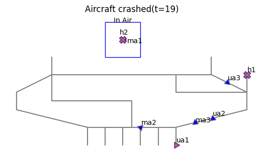
[44]:
fig.savefig("atc_comms_map.eps", format="eps", bbox_inches = 'tight', pad_inches = 0)
[45]:
endresults.t120p0.endclass
[45]:
num_cycled: 4
perc_cycled: 0.5
num_crashed: 2
[46]:
endresults.t11p0.graph.flows.ground
[46]:
<fmdtools.analyze.graph.MultiFlowGraph at 0x1f5aa481a50>
[47]:
import networkx as nx
[48]:
pos = nx.spring_layout(nx.MultiGraph(endresults.t11p0.graph.flows.ground.g))
endresults.t11p0.graph.flows.ground.set_pos(**pos)
endresults.t11p0.graph.flows.ground.set_node_labels(title="last", subtext="indicators")
endresults.t11p0.graph.flows.ground.set_edge_labels(title="")
endresults.t11p0.graph.flows.ground.set_node_styles(label={'State':dict(node_size=800),
'MultiFlow':dict(node_size=800)},
degraded={}, faulty={})
[49]:
fig, ax = endresults.t11p0.graph.flows.ground.draw(figsize=(7,7), legend_labelspacing=3, legend_bbox=(0.79,0.6))
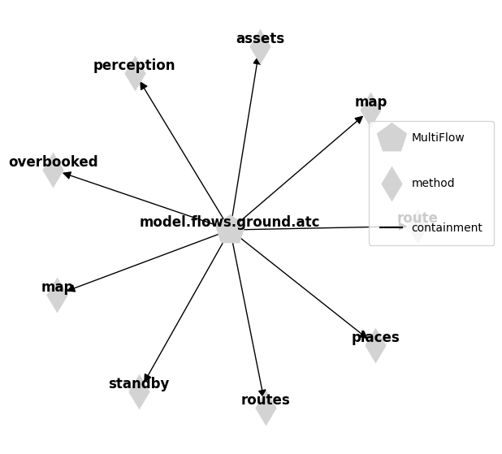
[50]:
fig.savefig("atc_comms_ground_11.eps", format="eps", bbox_inches = 'tight', pad_inches = 0)
The PostScript backend does not support transparency; partially transparent artists will be rendered opaque.
[51]:
pos = nx.spring_layout(nx.MultiGraph(endresults.t10p0.graph.flows.requests.g), iterations=500)
endresults.t10p0.graph.flows.requests.set_pos(**pos)
[52]:
endresults.t10p0.graph.flows.requests.set_edge_labels(title="")
endresults.t10p0.graph.flows.requests.set_node_styles(label={'CommsFlow':dict(node_size=900)},
degraded={}, faulty={})
[53]:
fig, ax = endresults.t10p0.graph.flows.requests.draw(figsize=(10,10), legend_bbox=(0.7,0.9))
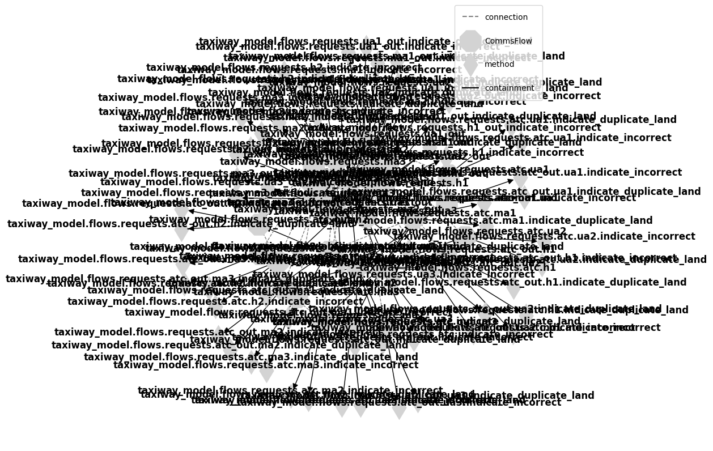
[54]:
fig.savefig("atc_comms_requests_10.eps", format="eps", bbox_inches = 'tight', pad_inches = 0)
The PostScript backend does not support transparency; partially transparent artists will be rendered opaque.
[55]:
pos = {'atc': [-1.0, -0.22], 'ma1': [-0.86, 0.52], 'ma2': [-0.33, 0.95],
'ma3': [0.62, -0.78], 'ua1': [-0.66, -0.76], 'ua2': [0.36, 0.94],
'ua3': [-0.02, -1.0], 'h1': [0.89, 0.48], 'h2': [1.0, -0.2],
'ground': [0.31, -0.26], 'location': [-0.31, -0.24], 'requests': [-0.01, 0.43]}
endresults.t20p0.graph.set_pos(**pos)
endresults.t20p0.graph.set_edge_labels(title="")
endresults.t20p0.graph.set_node_styles(label=dict(FxnBlock=dict(node_size=2000),
MultiFlow=dict(node_size=2000),
CommsFlow=dict(node_size=2000)),
degraded={}, faulty={})
[56]:
fig, ax = endresults.t20p0.graph.draw(withlegend=False, figsize=(5,5))
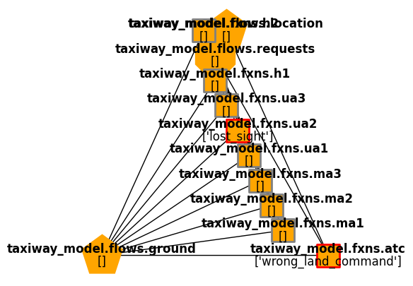
[57]:
fig.savefig("atc_comms_resgraph.eps", format="eps", bbox_inches = 'tight', pad_inches = 0)
[58]:
ind_hist = create_fault_scen_metrics(mdlhist)
[59]:
fig, ax = ind_hist.plot_line("degraded_fields",
"cycled_assets",
"unsafe_distances",
"assets_without_sight",
"faulty_functions",
time_slice=[8, 10],
time_slice_label = "fault injection/occurence",
ylabels={'off-nominal fields':'%'})
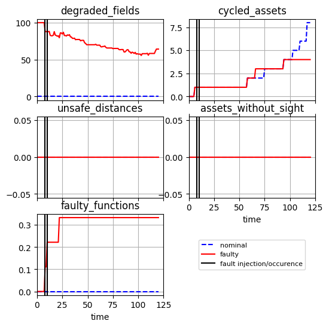
[60]:
fig.savefig("fault_history_atc_comms.eps", format="eps", bbox_inches = 'tight', pad_inches = 0)
The PostScript backend does not support transparency; partially transparent artists will be rendered opaque.
[61]:
final_values = ind_hist.faulty.get_slice(-1)
final_values
[61]:
{'incorrect_fields': 0,
'assets_without_sight': 0,
'unsafe_distances': 0,
'overbooked_locations': 0,
'incorrect_perception': 0,
'duplicate_land_commands': 0,
'cycled_assets': 4,
'degraded_fields': 64.20118343195266,
'faulty_functions': 0.3333333333333333,
'time': 120.0}
[62]:
final_res = pd.DataFrame.from_dict({k: [v] for k, v in final_values.items()}, orient='index')
final_res
[62]:
| 0 | |
|---|---|
| incorrect_fields | 0.000000 |
| assets_without_sight | 0.000000 |
| unsafe_distances | 0.000000 |
| overbooked_locations | 0.000000 |
| incorrect_perception | 0.000000 |
| duplicate_land_commands | 0.000000 |
| cycled_assets | 4.000000 |
| degraded_fields | 64.201183 |
| faulty_functions | 0.333333 |
| time | 120.000000 |
[63]:
print(final_res.to_latex())
\begin{tabular}{lr}
\toprule
& 0 \\
\midrule
incorrect_fields & 0.000000 \\
assets_without_sight & 0.000000 \\
unsafe_distances & 0.000000 \\
overbooked_locations & 0.000000 \\
incorrect_perception & 0.000000 \\
duplicate_land_commands & 0.000000 \\
cycled_assets & 4.000000 \\
degraded_fields & 64.201183 \\
faulty_functions & 0.333333 \\
time & 120.000000 \\
\bottomrule
\end{tabular}
[ ]: